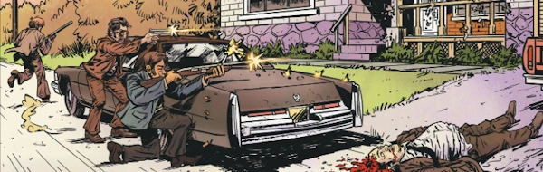

One-Eyed Jack was a Valiant character (of John Wagner's) that cropped up in the 1981 Sci-Fi Special, before resurrecting as part of Dredd's past (in 2023's One-Eyed Jacks). There, he was partnered with Eartha Fargo, an ancestor of Dredd's clone-father.
This story is set after their partnership has come to and end, and Eartha has relocated to a quieter, country beat. Back in the big city, though, Jack's in deep trouble and the only person he can trust is his ex-partner.
Art by Anna Readman & Quinton Winter
| Story Title | Parts | Pages | w indicates a wraparound coverCovers | Year(s) | Issues | Writer | Artist | Colourist | Letterer |
|---|---|---|---|---|---|---|---|---|---|
Linked to: One‑Eyed Jack [Fargo, Eartha]Fargo & McBane | 6 | 48 | M473: Cliff Robinson & Dylan Teague1 | 2024-2025 | M473-M478 | Ken Niemand | Anna Readman | Quinton Winter | Annie Parkhouse |
| year | episodes | pages |
| 2014 | 0 | 0 |
| 2015 | 0 | 0 |
| 2016 | 0 | 0 |
| 2017 | 0 | 0 |
| 2018 | 0 | 0 |
| 2019 | 0 | 0 |
| 2020 | 0 | 0 |
| 2021 | 0 | 0 |
| 2022 | 0 | 0 |
| 2023 | 0 | 0 |
| 2024 | 3 | 24 |
| 2025 | 3 | 24 |
| 2026 | 0 | 0 |
| 2027 | 0 | 0 |
| 2028 | 0 | 0 |
| 2029 | 0 | 0 |
| 2030 | 0 | 0 |
| 2031 | 0 | 0 |
| 2032 | 0 | 0 |
| 2033 | 0 | 0 |
| 2034 | 0 | 0 |
| 2035 | 0 | 0 |
Comic strip data (excludes other content):